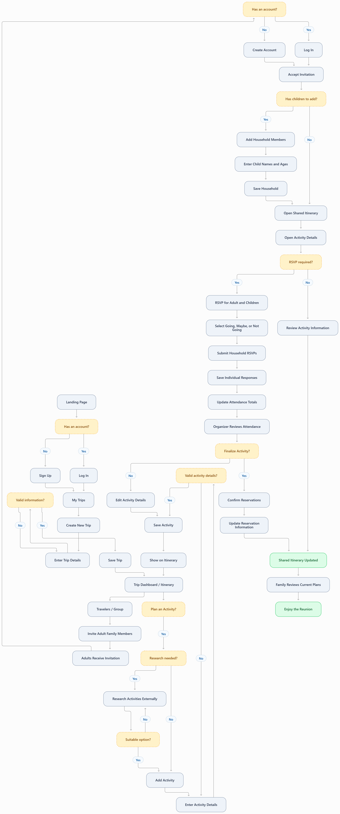

1. Name and Background
Name: Penelope Martinez
Age: 41
Role: Working professional, wife, mother, and family reunion organizer
Trip: Multigenerational family reunion
Group: 24 family members across six households and four generations
Age Range: 3–82 years old
Penelope is a 41-year-old working professional, wife, and mother who loves traveling, discovering new destinations, and bringing her family together. As the most experienced traveler in her extended family, she has naturally become the person everyone turns to for travel recommendations, vacation planning, and coordinating family gatherings.
Penelope is organized, resourceful, and detail-oriented. She genuinely enjoys researching destinations, finding unique experiences, and creating opportunities for her family to make lasting memories. Her relatives trust her judgment and appreciate her ability to organize plans that accommodate different personalities, interests, and needs.
She is currently planning a family reunion for 24 relatives across six households and four generations. The group includes young children, teenagers, adults, parents, and grandparents, with ages ranging from 3 to 82.
Penelope wants to create a balance of scheduled reunion events that bring everyone together and optional activities that allow smaller groups to explore based on their interests, physical abilities, and budgets.
Her goal is to organize a memorable reunion where everyone feels included, has access to the information they need, and can enjoy spending time together.
Family Composition
Penelope is organizing a family reunion for 24 relatives across six households and four generations.
- Penelope's Household (4): Penelope (41), spouse (43), and children (8, 13).
- Parents (2): Mother (65) and father (68).
- Grandparents (2): Grandmother (79) and grandfather (82).
- Sister's Family (5): Sister (38), spouse (40), and children (3, 6, 10).
- Brother's Family (4): Brother (35), spouse (34), and children (5, 9).
- Cousins' Household (7): Three cousins (28, 31, 33), two partners (29, 32), and children (7, 12).
Total: 24 family members, six households, and four generations.
Family Dynamics
Young Children (Ages 3–10)
The younger children enjoy interactive museums, parks, playgrounds, and outdoor activities. Their parents appreciate affordable attractions, shorter activities, and flexibility around meals and rest times.
Preteens and Teenagers (Ages 12–13)
The older children enjoy adventurous, interactive experiences and opportunities to spend time with cousins. They prefer activities that offer some independence and are engaging for their age group.
Adults (Ages 28–68)
The adults have a variety of interests, budgets, and responsibilities. Some enjoy outdoor adventures and sightseeing, while others prefer restaurants, cultural attractions, shopping, and relaxed experiences. Families with young children may have different scheduling needs than adults traveling without children.
Grandparents (Ages 79–82)
Penelope's grandparents enjoy spending time with the extended family but prefer activities with limited walking, accessible facilities, comfortable seating, and opportunities to rest.
Penelope considers these differences when planning activities and wants relatives to have choices without feeling obligated to participate in everything.
2. Technology
Devices
- iPhone with Safari: Used to access itineraries, maps, event details, reservation confirmations, and family messages while traveling.
- Windows Laptop with Google Chrome: Used for researching destinations, comparing activities, booking reservations, and organizing travel plans.
- Digital Calendar: Used to track important dates, event times, and travel arrangements.
- Group Text Messaging: Used to communicate with relatives and share updates.
Loves
- Bringing family members together through meaningful experiences.
- Researching destinations, restaurants, attractions, and local activities.
- Discovering experiences appropriate for different generations.
- Finding free and budget-friendly activities alongside premium options.
- Comparing admission prices, group discounts, and activity details.
- Organizing scheduled reunion events while allowing time for optional activities.
- Having reservations, locations, confirmation numbers, and event notes accessible in one place.
- Creating itineraries that are easy for family members to understand.
- Giving relatives the freedom to choose activities that fit their interests and budgets.
- Seeing her family enjoy the experiences she organized.
Hates
- Searching through emails and messages for reservation details.
- Having important information scattered across multiple platforms.
- Answering repetitive questions about event times and locations.
- Discovering hidden fees or unexpected costs.
- Contacting relatives individually to confirm attendance.
- Having to communicate schedule changes separately to every household.
- Missing family moments because she is occupied with logistical questions.
Frustrations and Needs
Penelope's biggest frustration is becoming the central source of information for the entire reunion. Family members repeatedly ask questions like, "What time is dinner?", "Where are we meeting?", "What are we doing tomorrow?", and "Who's going with us?" While she enjoys organizing family experiences, constantly answering logistical questions takes time away from enjoying those experiences herself.
Important information is often scattered across emails, reservation confirmations, text messages, notes, and conversations. When plans change, Penelope has to communicate updates to multiple households and make sure everyone has the most current information.
Planning for 24 family members across four generations adds another layer of complexity. Younger children, teenagers, adults, and grandparents have different interests, physical abilities, and budgets. Penelope wants to provide a variety of activities without expecting everyone to participate in everything. She needs an easy way to track who plans to attend each event so she can coordinate reservations and manage the itinerary.
Penelope needs one centralized platform where she can research activities, compare costs, organize schedules, store reservation details, share important event notes, and collect Yes or No RSVPs. Most importantly, she wants family members to independently access the information they need so she can spend less time managing logistics and more time making memories with her family.
Proficiency
Penelope is technologically proficient and comfortable using travel websites, online booking platforms, digital calendars, maps, and organizational tools.
She prefers using her laptop for detailed research and planning because it allows her to compare multiple options, evaluate pricing, and organize information efficiently.
During the reunion, she relies primarily on her phone to access schedules, directions, reservations, and event details.
Although Penelope is comfortable with technology, she values simplicity and efficiency. She prefers intuitive websites that make organizing information straightforward.
She also recognizes that some family members, particularly older relatives, may be less comfortable navigating unfamiliar websites. She wants a platform that is easy for everyone to access and understand.
3. Attitudes and Behaviors
Penelope approaches travel planning with enthusiasm, curiosity, and attention to detail. As an experienced traveler, she is comfortable researching destinations, comparing accommodations, coordinating schedules, and making reservations. She begins planning well in advance by identifying the important reunion events that will bring everyone together, including a welcome dinner, main family gathering, and group photograph. Once the core schedule is established, she researches additional activities that family members can enjoy during their free time.
With 24 family members across four generations, Penelope considers the different needs of young children, teenagers, adults, and grandparents. She evaluates activities based on interests, accessibility, location, duration, and age appropriateness. She is also mindful that different households have different budgets, so she intentionally includes free attractions, affordable outings, and premium experiences. Penelope understands that not everyone needs to participate in every activity and prefers a balanced itinerary with scheduled group gatherings and optional outings that allow relatives to explore in smaller groups.
After selecting activities, Penelope adds them to the shared itinerary and allows family members to RSVP as Going, Maybe, or Not Going. She uses these responses to coordinate reservations and finalize arrangements. She also pays attention to the smaller details that make events run smoothly, including dress codes, parking instructions, meeting locations, accessibility considerations, and items attendees should bring. Her goal is to provide enough information that family members can make informed decisions and participate without needing to contact her for every detail.
During the reunion, Penelope relies on her phone to access the itinerary, review event details, and make adjustments when necessary. She wants family members to have the same information available so they can independently check schedules, find locations, and stay informed. Above all, Penelope sees the reunion as an opportunity to strengthen family relationships and create lasting memories. She genuinely enjoys planning these experiences, but her greatest satisfaction comes from being present and participating in the moments she helped create.
4. User Story
As a family reunion organizer, I want to create a shared itinerary so everyone can stay informed and coordinate their participation independently.
5. Use Case
As the organizer of a multigenerational family vacation, I need one place to organize and share our itinerary so everyone knows the plan without constantly asking me for updates.
Scenario
Penelope is organizing a multigenerational family reunion for 24 relatives across six households and four generations. Because she is the most experienced traveler in her family, her relatives trust her to coordinate the reunion. She enjoys the opportunity to bring everyone together and wants to create a memorable experience.
She begins by organizing several scheduled reunion events, including a welcome dinner, main family gathering, and group photograph. She also wants to research optional activities that accommodate different ages, interests, physical abilities, and budgets.
Penelope plans to offer a combination of free attractions, affordable outings, and premium experiences. She wants younger family members to have opportunities for adventure and entertainment while providing accessible and relaxed experiences for older relatives.
She visits the trip-planning website and creates an account. After signing in, she creates a family reunion trip, enters the destination and travel dates, and begins organizing the itinerary.
She adds scheduled reunion events, including dates, times, locations, descriptions, estimated costs, and important notes such as dress codes, parking instructions, and what to bring.
Next, she uses the website's activity discovery tools to research attractions near the reunion destination. She filters results by age group, interests, accessibility, activity type, and budget. After reviewing the options, she selects activities and adds them to the shared itinerary.
Penelope invites her family members to access the trip and requests simple Yes or No RSVPs for applicable events and activities. As responses arrive, she reviews attendance, coordinates reservations, and makes any necessary adjustments.
During the reunion, family members use the shared itinerary to view daily schedules, event details, locations, costs, and important notes. Penelope can enjoy spending time with her family knowing everyone has access to the information they need.
Precondition
- Penelope has access to the trip-planning website but has not yet created an account.
- The family has selected a reunion destination and travel dates.
- She is organizing a reunion for 24 family members across six households and four generations.
- She has identified several important reunion events.
- She needs to research additional activities for different ages, interests, physical abilities, and budgets.
- She has some preliminary reservation information and activity ideas ready to organize.
Postcondition
- Penelope has successfully created an account.
- She has created a centralized family reunion itinerary.
- Core reunion events and optional activities are clearly distinguished.
- The itinerary includes experiences appropriate for different ages, interests, abilities, and budgets.
- Family members have been invited to access the reunion itinerary.
- Each event includes relevant information such as date, time, location, cost, description, and notes.
- Family members can RSVP Yes or No to applicable events and activities.
- Penelope can review attendance responses and coordinate reservations.
- Important reservation confirmations and event instructions are stored in one location.
- Family members can independently access updated itinerary information.
- Penelope can enjoy the reunion knowing her family has the information needed to participate.
6. Detailed User Interaction Flow
Penelope uses the trip-planning website to organize her multigenerational family reunion, schedule events and activities, invite adult relatives, collect RSVPs, and maintain a shared itinerary. Parents can manage their children as household members without creating separate accounts for them.
Account Creation and Onboarding
Step 1: Visit the Website
Penelope: Opens the trip-planning website using Google Chrome on her Windows laptop. She reviews the platform's purpose and features to determine whether it can simplify coordinating her family's reunion.
Website: Displays the landing page with the platform's value proposition, key planning features, examples of shared itineraries, and Create Account and Log In buttons.
Step 2: Begin Registration
Penelope: Selects Create Account.
Website: Opens the registration screen and prompts her to select Personal User or Business User.
Step 3: Select Account Type
Penelope: Selects Personal User because she is organizing a family vacation rather than a business trip.
Website: Displays the personal account registration form with the following fields:
- First Name: Text input
- Last Name: Text input
- Email Address: Email input
- Password: Password input
- Confirm Password: Password input
- Create Account: Submit button
Step 4: Complete Registration
Penelope: Enters Penelope as her first name, Martinez as her last name, her personal email address, and a password. She reenters her password in the confirmation field and selects Create Account.
Website: Validates the required fields, checks the email format, confirms that the password meets the stated requirements, and verifies that both passwords match. If information is missing or invalid, the website displays an error message next to the relevant field. Once the information is valid, it creates her personal account and signs her in.
Step 5: Open My Trips
Penelope: Completes registration and reviews her new account.
Website: Opens My Trips and displays a personalized welcome message, sections for trips she organizes and trips she attends, and a Create New Trip button. Because she has not created a trip, her trip list is currently empty.
Create the Family Reunion
Step 6: Create a New Trip
Penelope: Selects Create New Trip from My Trips.
Website: Opens the Create Trip form with the following fields:
- Trip Name: Text input
- Trip Type: Dropdown selection
- Destination: City, state, or destination input
- Start Date: Date picker
- End Date: Date picker
- Trip Description: Multiline text area
- Save Trip: Submit button
- Cancel: Return without saving
Step 7: Enter Reunion Details
Penelope: Enters Martinez Family Reunion as the trip name, selects Family Reunion from the trip type dropdown, enters the destination, and selects the arrival and departure dates. She adds a short description explaining that the trip will bring 24 family members together across four generations.
Website: Displays the completed information in the form and allows her to review or edit the details before saving.
Step 8: Save the Reunion
Penelope: Selects Save Trip.
Website: Checks that all required fields are completed and confirms that the end date is not earlier than the start date. If the information is valid, the website saves the reunion, assigns Penelope the Organizer role, and opens the Martinez Family Reunion dashboard.
Step 9: Review the Reunion Dashboard
Penelope: Reviews her newly created trip and available planning options.
Website: Displays the reunion name, destination, dates, description, and an empty chronological itinerary. The dashboard includes Add Activity, Edit Trip, and Travelers / Group options.
Organize Core Reunion Events
Step 10: Add the Welcome Dinner
Penelope: Selects Add Activity to schedule the family's welcome dinner.
Website: Opens the Add Activity form with the following fields:
- Activity Name: Text input
- Activity Type: Core Event or Optional Activity
- Activity Date: Date picker
- Start Time: Time input
- End Time: Time input
- Location Name: Text input
- Location Address: Address input
- Description: Multiline text area
- Estimated Cost: Currency input
- Cost Notes: Optional text area
- Event Notes: Multiline text area
- Reservation Confirmation: Optional text input
- Reservation Link: Optional URL input
- RSVP Required: Yes or No selection
- Save Activity: Submit button
- Cancel: Return without saving
Step 11: Complete Welcome Dinner Details
Penelope: Enters Family Welcome Dinner as the activity name and selects Core Event. She chooses Friday evening, enters the dinner's start and end times, restaurant name, street address, and a description explaining that this is the first gathering for the family.
She enters the estimated cost per person and notes any known additional fees. In Event Notes, she adds "Casual attire. Please arrive 15 minutes early." She includes available reservation details and selects Yes for RSVP Required.
Website: Displays the completed activity form, allowing Penelope to review her entries before saving.
Step 12: Save Welcome Dinner
Penelope: Selects Save Activity.
Website: Validates the required fields, checks that the activity date falls within the trip dates, and confirms that the end time is later than the start time. It saves the welcome dinner and returns Penelope to the reunion itinerary, where the event appears in chronological order.
Step 13: Add Main Family Gathering
Penelope: Selects Add Activity to schedule the main family gathering.
Website: Opens a new Add Activity form with the same fields used for the welcome dinner.
Penelope: Enters Main Family Gathering as the activity name, selects Core Event, and populates the date, start and end times, location name, address, description, and estimated cost. She adds notes about food, sunscreen, outdoor seating, accessible parking, and what family members should bring. She enables RSVPs and selects Save Activity.
Website: Validates and saves the gathering, then returns Penelope to the reunion itinerary with the event added to the schedule.
Step 14: Add Family Photograph
Penelope: Selects Add Activity to schedule the family photograph.
Website: Opens the Add Activity form.
Penelope: Enters Family Photograph as the activity name, selects Core Event, and chooses the date, start time, and end time. She enters the meeting location, address, description, and any applicable cost. In Event Notes, she includes instructions about coordinated clothing, arrival time, and where everyone should meet. She enables RSVPs and selects Save Activity.
Website: Saves the event and returns Penelope to the itinerary, which now displays the welcome dinner, main family gathering, and family photograph in chronological order.
Step 15: Review Core Events
Penelope: Reviews the three scheduled core events to make sure the dates, times, and locations are correct.
Website: Displays the itinerary with each event's name, date, time, location, and Core Event label. Selecting an event opens its activity details.
Research and Schedule Optional Activities
Step 16: Research Activities
Penelope: Uses external travel websites to research attractions suitable for young children, teenagers, adults, and grandparents. She compares interests, accessibility, distance, duration, admission prices, age restrictions, and group discounts.
Website: Provides the Add Activity option within the reunion itinerary so Penelope can manually enter the activities she selects.
Step 17: Add an Optional Activity
Penelope: Returns to the Martinez Family Reunion itinerary and selects Add Activity.
Website: Opens the Add Activity form with fields for the activity name, type, date, start and end times, location, address, description, estimated cost, cost notes, event notes, reservation information, and RSVP requirements.
Step 18: Complete Optional Activity Details
Penelope: Enters the attraction name and selects Optional Activity. She chooses the date and start and end times, enters the location and street address, and writes a description of the experience.
She enters the estimated admission cost per person and notes any child pricing, group discounts, or additional fees. She includes instructions about parking, accessibility, age suitability, and what participants should bring. She enables RSVPs and selects Save Activity.
Website: Validates and saves the activity, then returns Penelope to the reunion itinerary. The new event appears with an Optional Activity label.
Step 19: Complete Optional Activity Schedule
Penelope: Repeats the Add Activity process for additional attractions appropriate for different ages, interests, physical abilities, and budgets. She includes free attractions, affordable outings, and premium experiences to give family members a variety of options.
Website: Saves each selected activity and displays it in the chronological itinerary, distinguishing Core Events from Optional Activities.
Invite Family Members and Manage Households
Step 20: Open Travelers / Group
Penelope: Selects Travelers / Group from the reunion dashboard.
Website: Displays the traveler roster, identifies Penelope as the Organizer, and provides an Invite Traveler button.
Step 21: Open Invitation Form
Penelope: Selects Invite Traveler.
Website: Displays the invitation form with the following fields:
- Adult Traveler Email Address: Email input
- Add Another Email: Add another adult recipient
- Invitation Message: Optional text area
- Send Invitations: Submit button
- Cancel: Return without sending
Step 22: Send Invitations
Penelope: Enters the email addresses of adult relatives she wants to invite. She includes a welcome message explaining that the shared itinerary contains reunion schedules, activity details, and RSVP options. She asks parents to add their children to their household after joining. She selects Send Invitations.
Website: Validates the email addresses, sends the invitations, and displays each adult recipient with a Pending status.
Step 23: Accept Invitations and Add Children
Family Member: An adult opens the invitation link, creates an account or logs in, and accepts the trip invitation.
Website: Adds the adult to the traveler roster, assigns the Traveler role, and displays an Add Household Member option within Travelers / Group.
Family Member: A parent selects Add Household Member.
Website: Displays the following form:
- Child's Name: Text input
- Child's Age: Optional number input
- Add Another Child: Add another child entry
- Save Household: Submit button
- Cancel: Return without saving
Family Member: Enters each child's name and age, then selects Save Household.
Website: Saves the children as household members associated with the parent's account. Children appear in the trip's traveler roster but do not receive invitations, passwords, or separate accounts. Only the responsible adult can submit or update their RSVPs.
Step 24: Review Traveler Roster
Penelope: Returns to Travelers / Group to review the adults and children participating in the reunion.
Website: Displays accepted adult travelers, pending invitations, and children associated with each household. It shows the total number of registered trip participants, including children, without counting them as user accounts.
Collect and Manage Household RSVPs
Step 25: Parent Reviews an Activity
Family Member: A parent opens Martinez Family Reunion from My Trips, reviews the itinerary, and selects an activity.
Website: Opens Activity Details and displays the event name, date, start and end times, location, address, description, estimated cost, reservation information, and event notes.
Step 26: Submit Household RSVPs
Website: Displays an RSVP form listing the signed-in adult and their children. Each household member has an individual RSVP selection.
- Activity Name: Displayed for reference
- Adult Traveler Name: Displayed automatically
- Child Names: Displayed from the saved household
- Going: RSVP option for each person
- Maybe: RSVP option for each person
- Not Going: RSVP option for each person
- Submit RSVPs: Submit button
Family Member: Reviews the event details and selects Going, Maybe, or Not Going for themselves and each child. For example, a parent may select Going for themselves and two children, while selecting Not Going for another child. They select Submit RSVPs.
Website: Saves each person's response individually, displays a confirmation, and updates the event's attendance totals. Any household member without a submitted response remains Not Responded. The parent can return to the activity to review or change their household's RSVPs.
Step 27: Review Attendance
Penelope: Opens an activity from the reunion itinerary to review family participation before confirming reservations.
Website: Displays attendance totals for individual people, including adults and children, grouped by Going, Maybe, Not Going, and Not Responded. Penelope can also review responses by household to understand how many family members are attending each activity.
Finalize Reservation Details
Step 28: Update Reservation Information
Penelope: Reviews the RSVP responses and contacts the venue to confirm the reservation. She opens the activity and selects Edit Activity.
Website: Displays the Edit Activity form with the existing information populated.
Penelope: Enters the reservation confirmation number, adds the booking link if available, and updates Event Notes with any arrival or check-in instructions. She selects Save Activity.
Website: Validates and saves the updated reservation information, making the current details available to authorized trip participants.
Review and Share the Itinerary
Step 29: Review Complete Itinerary
Penelope: Returns to the reunion dashboard and reviews the complete schedule.
Website: Displays all Core Events and Optional Activities in chronological order, including dates, times, locations, and links to Activity Details.
Step 30: Edit Trip Information
Penelope: Selects Edit Trip to update the reunion description or other basic trip details.
Website: Opens the Edit Trip form with the existing trip name, type, destination, dates, and description populated.
Penelope: Updates the necessary fields and selects Save Trip.
Website: Validates the changes, saves the updated information, and returns her to the reunion dashboard.
Step 31: Share Reunion Information
Penelope: Confirms that the itinerary, activity details, and reservation information are ready for family members to review.
Website: Makes the current itinerary available to accepted adult travelers through their My Trips dashboards. Parents can review the schedule and manage attendance for their children.
Use the Website During the Reunion
Step 32: Access the Itinerary
Penelope: Opens the website on her iPhone, logs in if necessary, selects Martinez Family Reunion from My Trips, and reviews the day's activities.
Website: Displays the reunion itinerary in a mobile-friendly layout with activities organized chronologically. Each activity links to its details.
Step 33: Update an Activity
Penelope: Learns that the main family gathering needs to begin 30 minutes later. She opens the event and selects Edit Activity.
Website: Displays the Edit Activity form with the existing event information populated.
Penelope: Updates the Start Time, adjusts End Time if necessary, and selects Save Activity.
Website: Validates and saves the updated times. The revised information appears in the shared itinerary and Activity Details.
Step 34: Family Members Review Updates
Family Member: An adult opens the reunion itinerary to check the updated gathering schedule for their household.
Website: Displays the current event time and links to updated activity details and notes.
Step 35: Enjoy the Reunion
Penelope: Participates in family gatherings and optional activities without needing to personally answer every question about schedules, locations, reservations, and attendance.
Website: Continues providing accepted adult travelers with access to the shared itinerary, activity details, RSVP information, locations, reservation notes, and current schedules.
Final Outcome
Penelope successfully organizes a multigenerational family reunion using one centralized trip-planning website. Adult family members can independently access the itinerary and submit RSVPs for themselves and their children. Penelope receives accurate attendance totals for all family members, including children who do not have website accounts. This allows her to coordinate reservations, reduce repetitive logistical questions, and spend more time enjoying the reunion.
Planner Penelope User Flow Diagram
